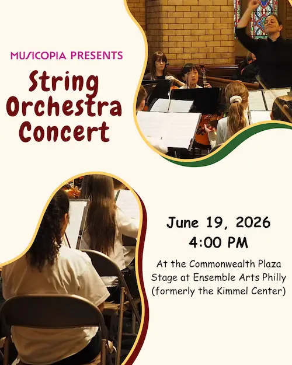
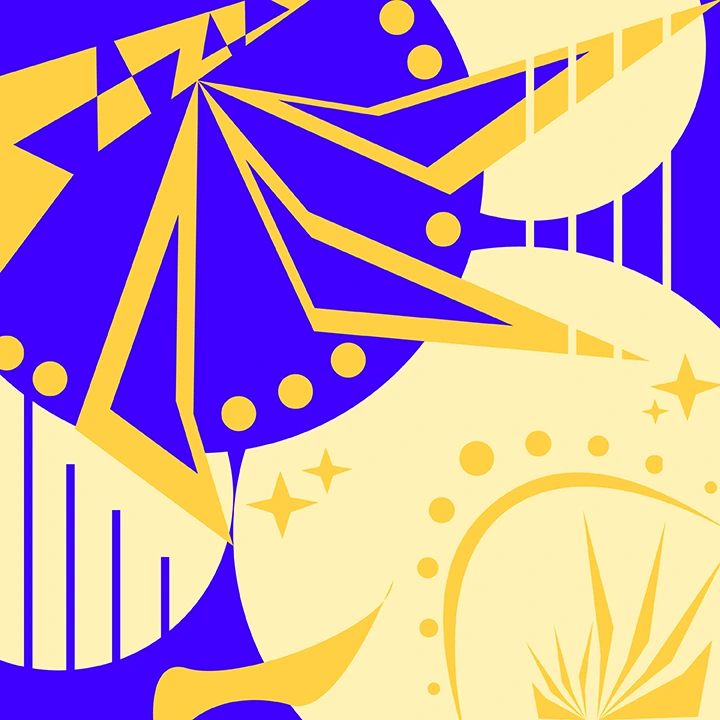
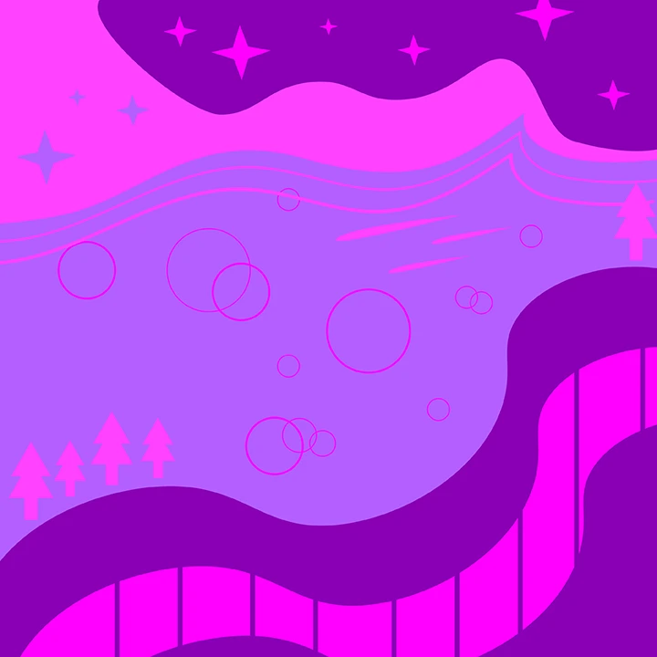
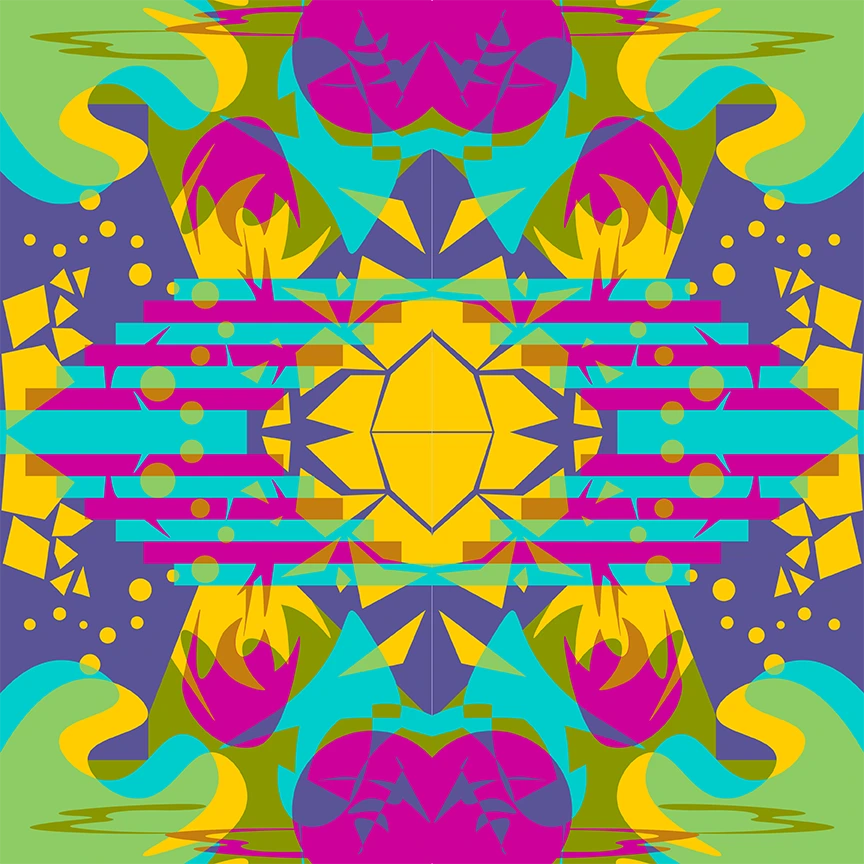
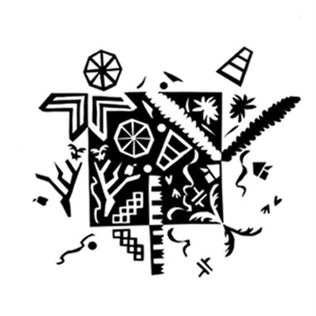
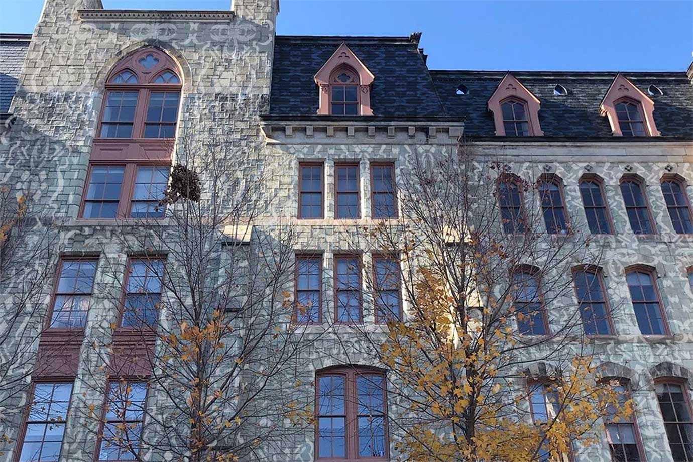

Webtoon Logo Animation
- Webtoon logo animation for their app's splash screen.
(click image for video) - Maintained brand consistency through audience research.
- Utlized Adobe After Effects to create shapes, overlays, and effects.
Mural Advertisement Animation
- Created a message to best showcase Philadelphia's murals.
(click image for video) - Incorporated the 12 animation principles
- Utlized Adobe After Effects to create shapes, overlays, and effects.
- Organized multiple media types for video editing.
New York Trip Social Media Video Composit
- Short video of my trip to New York.
(click image for video) - Organized multiple media types for video editing.
- Created complex transitions and animation through layering.
Drexel Promo Video
- Short video promoting Drexel's campus while maintaining brand consistency.
(click image for video)

Musicopia Social Media Post
- An informational event post for Musicopia, designed with brand consistency.
- Utilized masking and organic shapes to create a fun, bubbly design.

One Like Two
- Worked on making yellow appear like two different colors with popping complementary colors.
- Explored and manipulated shapes in Adobe Illustrator to create illusions of complex designs through layering.

Two Like One
- Worked on making two colors appear like one color with analogous colors.
- Explored and manipulated tools such as Curvature in Adobe Illustrator to create an aesthetically pleasing landscape.

Illusion of Transparency
- Worked on making two colors appear like one color with analogous colors.
- Explored and manipulated shapes and tools such as Curvature and Pathfinder in Adobe Illustrator to create an aesthetically pleasing landscape.

Notan
- Created a notan with organic and geometric shapes from through inspirations from the movie Pleasantville.
- Used Mi-Teintes Black Paper, Best-Test Paper Cement, Grafix Rubber Cement Pick-Up, and X-Acto knife to create it.

Photoshop
- Utilized Adobe Photoshop's many selection tools and other effects to integrate a motif and a building into one.
The Cat Zodiac
- A recreation of the 12 zodiac signs of western astrology through the idea human similarities to cat characteristics.
- Focused on coding in JavaScript using VSCode to make an interactive desktop website for users to enjoy.